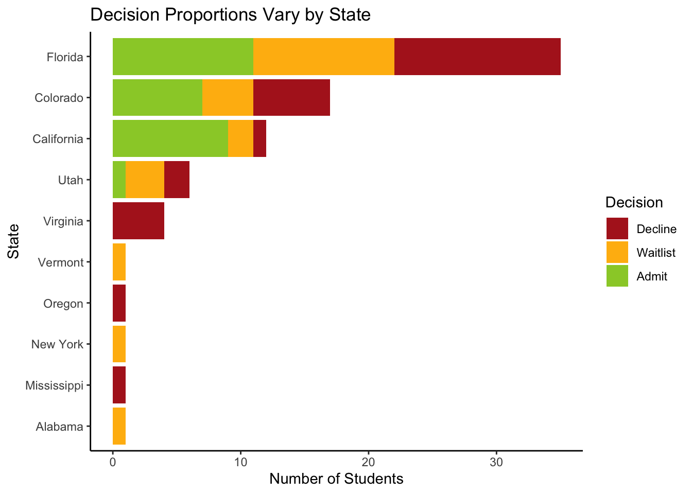

The dataset contains information about 79 students applying to an internship. There are eight variables in the dataset related to a student’s background, various test scores, and the internship hiring decision. These six variables are the state the student is from, gender, GPA, test score, writing test score, the number of years of work experience they have,the level of effort they put into volunteering, and their admission decision (admitted, waitlisted, or declined). We will first investigate trends by admission decision in these variables as well as how correlated they are with the admission decision. These trends will help inform the board of the most important factors that internship hiring committes are using.
Admission Decisions
The same percentage of students were admitted and declined, 35.4%. Slighly less students, 29.1%, were waitlisted. Overall, admissions decisions were split relatively equally across types of decisions.
Code
library(ggplot2)library(dplyr)df <-read.csv("../data/cleaned_data/data_cleaned.csv")df$Decision <-factor(df$Decision, levels =c("Decline", "Waitlist", "Admit"))ggplot(df, aes(x = Decision, fill = Decision)) +geom_bar(stat ="count", position ="dodge") +coord_flip() +theme_classic() +scale_fill_manual(values =c("Admit"="yellowgreen", "Waitlist"="darkgoldenrod1", "Decline"="firebrick")) +labs(title ="Admission Decisions are Fairly Well-Balanced",x ="Decision", y ="Percentage of Students", fill ="Decision") +geom_text(aes(label = scales::percent(..count../sum(..count..), accuracy =0.1)),stat ="count", position =position_stack(vjust =0.5), size =5 ) +theme(axis.title.y =element_blank(),axis.text.x =element_blank(),axis.ticks =element_blank(),axis.line =element_blank(),legend.position ="none" )
Correlations
For all of the variables except the states variable, we can compute correlation coefficients. The most correlated variable is test score. We can infer that the student’s with the highest test scores are most likely to be admitted. However, other variables may contribute to internship decisions. Gender was perfectly uncorrelated with internship decisions so we can infer that gender does not matter in the applicant process.
Test Score, Writing Score, and GPA are all positively correlated with internship decisions and are also correlated with each other. Volunteer Level and Work Experience are negatively correlated with admission decision and negatively correlated with eachother.
Applicants came from 10 states, with Florida having the most applicants, followed by Colorado and California. California had the highest percentage of admits compared to other states. No students from states with only one applicant were admitted. All four applicants from Virginia were declined. Overall, admission decisions appear to vary across states so we can assume that the state a applicant is from could affect their admission decision.
Code
df <- df %>%mutate(Decision =factor(Decision, levels =c("Decline", "Waitlist", "Admit")))ggplot(df, aes(x =reorder(State, table(State)[State]), fill = Decision)) +geom_bar() +coord_flip() +theme_classic() +scale_fill_manual(values =c("Admit"="yellowgreen", "Waitlist"="darkgoldenrod1", "Decline"="firebrick")) +labs(title ="Decision Proportions Vary by State",x ="State", y ="Number of Students", fill ="Decision")

Gender
There are 45 male applicants and 34 female applicants. The proportion of admits, waitlists, and declines are nearly identical across genders. This shows that gender is uncorrelated with admission decision.
Code
df_percent <- df %>%mutate(Gender =factor(Gender, levels =c(0, 1), labels =c("Female", "Male")),Decision =factor(Decision, levels =c("Decline", "Waitlist", "Admit"))) %>%group_by(Gender, Decision) %>%summarise(count =n()) %>%group_by(Gender) %>%mutate(percentage = count /sum(count) *100) %>%ungroup()ggplot(df_percent, aes(x =reorder(Gender, -percentage), y = percentage, fill = Decision)) +geom_bar(stat ="identity") +coord_flip() +theme_classic() +scale_fill_manual(values =c("Admit"="yellowgreen", "Waitlist"="darkgoldenrod1", "Decline"="firebrick")) +labs(title ="Decision Proportions are Nearly Identical Across Genders",x ="Gender", y ="Percentage of Students", fill ="Decision") +geom_text(aes(label =paste0(round(percentage, 1), "%")), position =position_stack(vjust =0.5),size =4, color ="black")
GPA
GPA is positively correlated with internship decision as shown by admitted students having the highest test scores, followed by waitlisted students and declined students. Declined students appear more uniform across the GPA bands compared to waitlisted or admitted students.
Internship Decisions are strongly positively correlated with test scores, as shown by the clear divisions of test scores among the groups besides a few outliers. Admitted students have the highest GPA, followed by waitlisted students and declined students.
Internship Decisions are positively correlated with writing test scores. Admitted students have the highest writing scores, followed by waitlisted students and declined students besides a few outliers.
Code
wd_bands <- wd_bands %>%mutate(Writing_Score_Bands =case_when( WritingScore <60~"< 60", WritingScore >=60& WritingScore <=64~"60-64", WritingScore >=65& WritingScore <=69~"65-69", WritingScore >=70& WritingScore <=74~"70-74", WritingScore >=75& WritingScore <=79~"75-79", WritingScore >=80& WritingScore <=84~"80-84", WritingScore >=85& WritingScore <=89~"85-89", WritingScore >=90~">= 90" ))wd_bands <- wd_bands %>%mutate(Writing_Score_Bands =factor(Writing_Score_Bands, levels =c("< 60", "60-64", "65-69", "70-74", "75-79", "80-84", "85-89", ">= 90" )))wd_bands_count <- wd_bands %>%count(Writing_Score_Bands, Decision) %>%complete(Writing_Score_Bands, Decision, fill =list(n =0))ggplot(wd_bands_count, aes(fill = Decision, y = n, x = Writing_Score_Bands)) +geom_bar(position ="dodge", stat ="identity") +scale_fill_manual(values =c("Decline"="firebrick", "Waitlist"="darkgoldenrod1", "Admit"="yellowgreen")) +theme_minimal() +labs(x ="GPA Bands", y ="Number of Students", fill ="Decision") +theme(axis.text.x =element_text(angle =45, hjust =1)) +ggtitle("Comparison of Writing Scores Across Decisions")
Work Experience
By observing the plot below, we can see that work experience is uncorrelated with admission decision.
Code
wd_bands <- wd_bands %>%mutate(WorkExp_Bands =case_when( WorkExp <1~"< 1", WorkExp >=1& WorkExp <=1.9~"1-1.9", WorkExp >=2& WorkExp <=2.9~"2-2.9", WorkExp >=3& WorkExp <=3.9~"3-3.9", WorkExp >=4& WorkExp <=4.9~"4-4.9", WorkExp >=5& WorkExp <=5.9~"5-5.9", WorkExp >=6& WorkExp <=6.9~"6-6.9", WorkExp >=7& WorkExp <=7.9~"7-7.9", WorkExp >=8& WorkExp <=8.9~"8-8.9", WorkExp >=9~">= 9" ))wd_bands <- wd_bands %>%mutate(WorkExp_Bands =factor(WorkExp_Bands, levels =c("< 1", "1-1.9", "2-2.9", "3-3.9", "4-4.9", "5-5.9", "6-6.9", "7-7.9", "8-8.9",">= 9" )))wd_bands_count <- wd_bands %>%count(WorkExp_Bands, Decision) %>%complete(WorkExp_Bands, Decision, fill =list(n =0))ggplot(wd_bands_count, aes(fill = Decision, y = n, x = WorkExp_Bands)) +geom_bar(position ="dodge", stat ="identity") +scale_fill_manual(values =c("Decline"="firebrick", "Waitlist"="darkgoldenrod1", "Admit"="yellowgreen")) +theme_minimal() +labs(x ="Work Experience Bands (in years)", y ="Number of Students", fill ="Decision") +theme(axis.text.x =element_text(angle =45, hjust =1)) +ggtitle("Comparison of Work Experience Across Decisions")
Volunteer Experience
By observing the plot below, we can see that volunteer experience is uncorrelated with admission decision.
Code
wd_bands_count <- wd_bands %>%count(VolunteerLevel, Decision) %>%complete(VolunteerLevel, Decision, fill =list(n =0))ggplot(wd_bands_count, aes(fill = Decision, y = n, x =as.factor(VolunteerLevel))) +geom_bar(position ="dodge", stat ="identity") +scale_fill_manual(values =c("Decline"="firebrick", "Waitlist"="darkgoldenrod1", "Admit"="yellowgreen")) +theme_minimal() +labs(x ="Volunteer Level", y ="Number of Students", fill ="Decision") +theme(axis.text.x =element_text(hjust =1)) +ggtitle("Comparison of Volunteer Level Across Decisions")